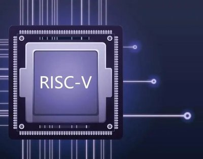
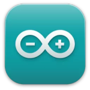
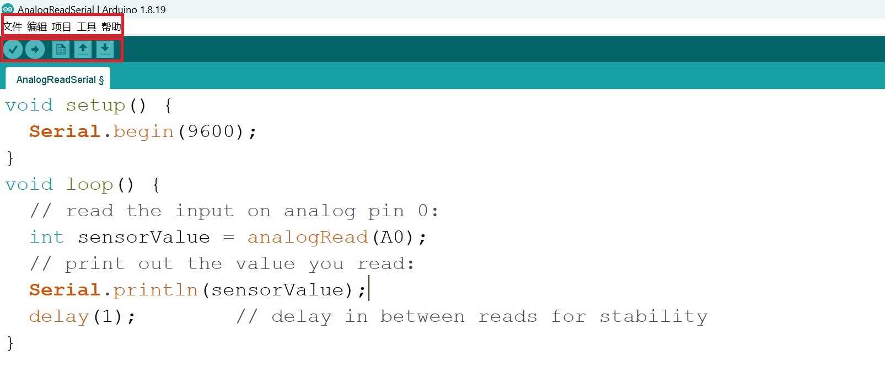
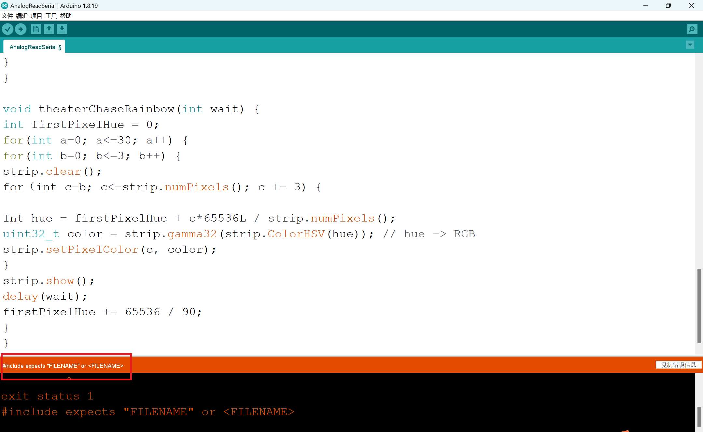
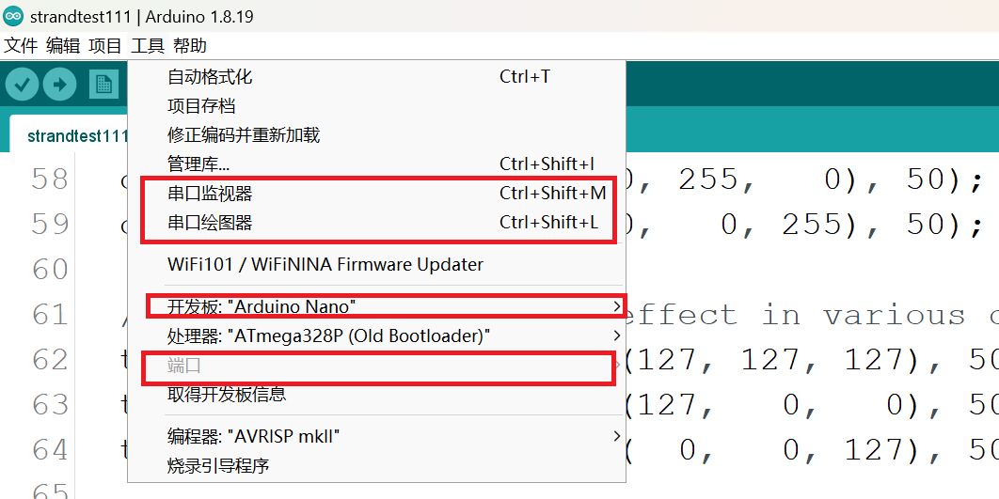
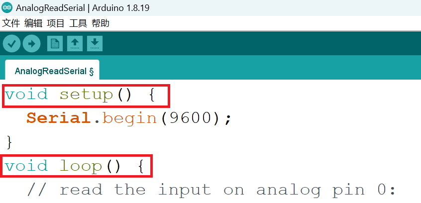
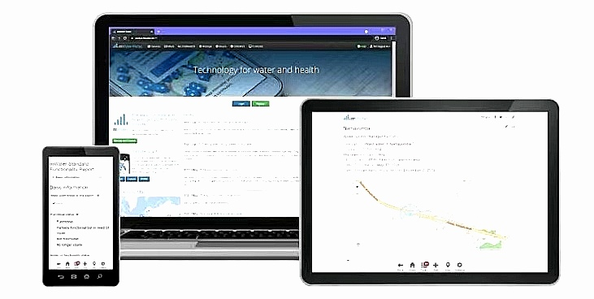
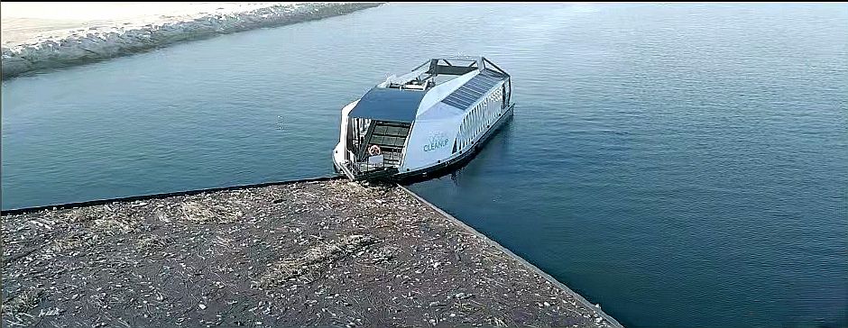

RISC-V is an open-source instruction set architecture (ISA) based on the principle of Reduced Instruction Set (RISC). The following is a detailed introduction about RISC-V:
1. Definition and Background
RISC-V (pronounced "risk five") is an open-source instruction set architecture designed to provide a completely open, concise, flexible, efficient, and scalable instruction set architecture.
This project began in 2010 and was led by Professor David Patterson from the University of California, Berkeley, receiving widespread support and contributions from both academia and industry.
2. Characteristics and advantages
Open source: The RISC-V instruction set can be freely used for any purpose, allowing anyone to design, manufacture, and sell RISC-V chips and software.
Modularity and Scalability: RISC-V supports modular design, allowing users to choose instruction set extensions that are suitable for specific applications, achieving customized solutions.
Simplicity: Compared to commercial architectures such as x86 and ARM, RISC-V has a shorter document length (less than 300 pages), a simpler instruction set, and is easy to understand and implement.
Efficiency: The design of RISC-V considers a balance between performance and power consumption, making it suitable for modern computing devices such as cloud computing, high-end mobile phones, and micro embedded systems.
3. Technical specifications
RISC-V has a Basic Instruction Set Architecture (ISA) that supports various architectural variants and instruction set extensions.
The basic instruction set includes more than 40 instructions, and with other commonly used module subsets, the total number of instructions is only a few dozen.
RISC-V also supports various optional extension instructions, such as integer extension, floating-point extension, vector extension, etc., to meet the needs of different applications.

Arduino IDE
The Arduino Integrated Development Environment(IDE)is the primary text editing
program used for programming Arduino.Before uploading the code to the circuit
board you want to program,you can input the code into it.The Arduino code is
called a sketch.

There are 5 submenus on the menu bar,and a series of buttons below are available
for you to verify and upload sketches.The IDE translates and compiles your sketch
into code that Arduino can understand.Once the Arduino code is compiled,it will be
uploaded to the memory of the circuit board.

If there are any errors in the Arduino code,a warning message will be marked to
prompt the user to make changes.

Serial monitor and serial plotter
You can open the Arduino Serial Monitor by clicking on the magnifying glass icon in
the upper right corner of the IDE or below the tools.Serial monitors are mainly used
to interact with computers and Arduino boards,and are a good tool for real-time
monitoring and debugging.
The Arduino Serial Plotter is another component of the Arduino IDE that allows you
to generate real-time graphics of serial data.Serial plotters make it easier for you to
analyze data through visual displays. You can create charts,negative value charts,
and perform waveform analysis.

Arduino's Programming Language One
An Arduino script code(SKETCH)consists of two parts
Void setup()
Place a program to initialize the Arduino board vwithin the scope of this function-a
command to properly install the Arduino board before the main program begins
writing.
Void loop()
Place your Arduino scrip there.This part of the program will be executed repeatedly
until the Arduino board is closed.

Case1:The Ocean Clean up
The Ocean Clean up is a non-profit organisation that works in two parts:
cleaning up Marine litter;Intercept river litter. The goal is to remove 90%
of floating Marine debrisby 2040.In the case of Marine debris,they used
computer models to locate areas where trash accumulates.Then,two
boats were used to set up a U-shaped barrier,using the difference in
current speed to collect garbage.Finally,the garbage is sent a shore
regularly for recycling.
In terms of river waste,they provide a variety of interceptors according to
the characteristics of different rivers.
Advantages:Creative,outstanding contribution to environmental
protection,important for the environmental protection of rivers and
oceans.Can clean up the garbage and protect the aquatic animals at the
same time.
Disadvantages:High construction costs,equipment damage in the sea is
difficult to recover,but also will increase pollution.

Case2:mWater
mWater is a water data platform that enables governments,utilities,water
management agencies andother customers to collect, analyze,and share
water-related data.
In 2010,adevastating 7.0 - magnitude earthquake devastated Haiti's
drinking water and sanitation systems,leading to a cholera outbreak.
mWater assisted the Haitian Government's Water and Sanitation
Department in establishing a geographic database of drinking water
sources and sanitation facilities.This has helped the Haitian government
rebuild water and sanitation infrastructure.
Advantages:real-time data monitoring and analysis,help crisis response,
data sharing,customizable advantages.
Disadvantages:There are data security problems and high initial
investment disadvantages.

Case3:Wild life Insights
Wild life Insights is a wild life conservation program run by the World
Wildlife Fund.The project brings together wild life photos from more than
1,600 camera traps around the world,using AI models to automatically
identify animals in the images.The project shares data in an open,visual
form to engage researchers and the public in wildlife conservation.
Camera trap:Adevice that automatically takes photos or videos when it
senses animal activity.
Advantages:It has efficient data processing capacity,which can help the
research and protection of land animals.
Disadvantages:May cause ecological interference,technical update and
high maintenance costs.